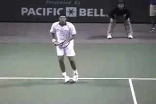
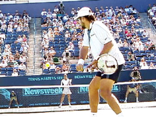
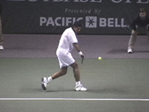

One-Handed Backhand Completion¶
One-Handed Backhand Completion¶
Scott Murphy¶
With good technical elements, the one handed backhand drive is a beautiful, dependable stroke. There is absolutely no reason you can't develop this classic shot-even if you've secretly feared your backhand for years.

Mark Philippoussis shows the ball who is boss-with beautiful classical form.
In the last article we examined the preparation phase. (See Part 1). Now let's take the one hander from the preparation through the hit, again using some the world's best one players to illustrate how it's done.
The first point to note is mental. Hitting the one-handed backhand is in large part a matter of the right attitude.
Players who have the elements correct, may still not crack the ball convincingly unless they are mentally determined to "lean on the ball." This doesn't mean tilting your body, it means showing the ball who's the boss!
 Pete Sampras makes contact further in front of his body and front leg than any player in the game.
Pete Sampras makes contact further in front of his body and front leg than any player in the game.
see many players do this well on their forehands but the mental conviction just isn't the same on the backhand. Once an understanding of the backhand model has been attained it's then very important to approach the shot like you mean business. This doesn't mean to try and rip every backhand! It's more about hitting making contact when and where YOU want to instead of the ball dictating that.
The contact range will vary from person to person, but on every solid one-hander the contact point is beyond or in front of the foot that's stepping to the ball. Hitting over or behind the lead foot will greatly undermine one's chances of controlling their shot.

Visualize starting the swing by pulling the butt of the racket to the ball.As you begin to swing forward, pull the butt of the handle towards the ball while keeping your wrist locked. If the handle doesn't lead the strings, you can still whip the racket through, even if the contact range is correct. Your hitting hand should pass close to the hip as you bring the racket forward, further ensuring good support at contact.As you move the racket forward to the ball, the hitting arm should straighten out well before contact. This straight arm position continues after the hit all the way through the follow-through. It's hard to stress this point too much. The most common cause of weak one-handers is the dreaded "elbow lead," with the arm bent at the contact. This is one reason why we stressed in the preparation phase that the loop should be as compact as possible.

Mark Philippoussis straightens his hitting arm out immediately as the racket moves forward to the ball. It stays straight at and through the contact.
The exact contact point-that is, how far you actually hit the ball in front is a matter of individual feel. To establish your own personal contact range, be sure to keep your head still and square on your shoulders, Now watch the ball until you HEAR it hit your strings.

Scott Murphy is from Marin County, California where he started playing tennis at age 5 in a family of tennis nuts. Both of his parents were major influences in his development. He also took lessons from Marin legend Hal Wagner and former top 10, Harry Roach. Scott is a graduate of the University of California at Berkeley where he played baseball and football but continued to work on his tennis game with renowned coach Chet Murphy. He was the head pro at San Domenico/Sleepy Hollow Tennis Club for over 20 years. He also directed the Nike Tahoe Tennis Camp at the Granlibakken Resort for 10 years. Scott now teaches privately in Ross, Marin County and in the summer he directs the Tuscan Tennis Academy which he founded in Quarrata, Italy.
Check out Scott's website at scottmurphytennis.net
You can contact Scott directly at: scottmrph@yahoo.com